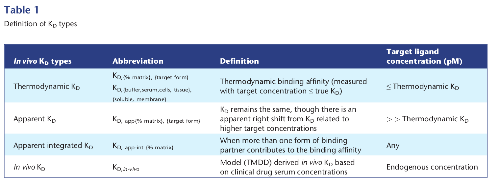

<?xml version="1.0" encoding="UTF-8"?>
<table title="table1" id="table1" class="tabcontent" xmlns="http://www.w3.org/1999/xhtml">
 <tr>
  <td>
   
   <p>../../cm-ucl/corpus-oa-pmr-v02/10.1111_bph.13654/tables/table1/table.png</p>
  </td>
  <td>
   <table class="table">
    <caption/>
    <tr>
     <th class="cell">Thermodynamic K _{D} Apparent K _{D} Apparent integrated K _{D} In vivo K _{D} </th>
     <th class="cell">K _{D,{%} _{matrix},} _{{target} _{form}} K _{D,{buffer,serum,cells,} _{tissue},} {soluble, membrane} K _{D,} _{app{%} _{matrix},} _{{target} _{form}} K _{D,} _{app-int} _{{%} _{matrix}} K _{D,in-vivo} </th>
     <th class="cell">Thermodynamic binding affnity (measured with target concentration ≤true K _{D} ) K _{D} remains the same, though there is an apparent right shift from K _{D} related to higher target concentrations When more than one form of binding partner contributes to the binding affnity Model (TMDD) derived in vivo K _{D} based on clinical drug serum concentrations </th>
     <th class="cell">≤Thermodynamic K _{D} &gt; &gt; Thermodynamic K _{D} Any Endogenous concentration </th>
    </tr>
   </table>
   <p>../../cm-ucl/corpus-oa-pmr-v02/10.1111_bph.13654/tables/table1/table.svg.html</p>
  </td>
 </tr>
</table>
